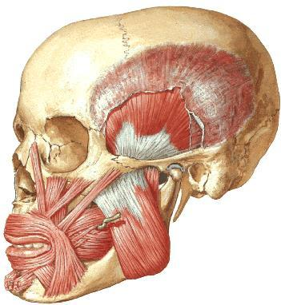
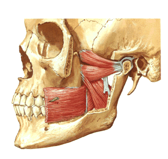
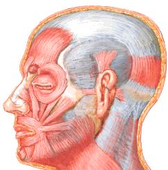
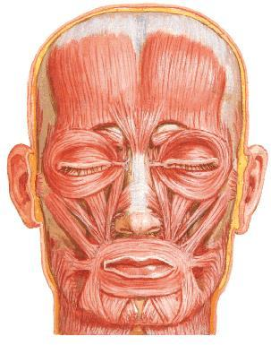
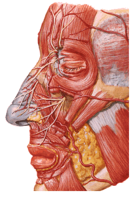

ClinicusMed · Dossiê Clinicus — Padrão de Excelência
| Ramo | Ramas Terminais | Território / Saída do Crânio |
|---|---|---|
| Oftálmico (com gânglio oftálmico) | Nervo Nasal, Frontal, Lacrimal | Tegumentos da região frontal, superciliar e pálpebra superior. Sai pela fissura esfenoidal |
| Maxilar Superior (com gânglio esfenopalatino/Meckel) | Nervo Infraorbitário | Tegumentos da pálpebra inferior, bochecha, asa do nariz, lábio superior. Sai pelo forame redondo maior |
| Mandibular (com gânglio ótico) | Nervo Dentário Inferior, Nervo Lingual | Tegumentos da região temporal, bochecha, lábio inferior, mento. Sai pelo forame oval |

| Aspecto | Detalhe |
|---|---|
| Inserção | Fossa temporal; músculo plano e radiado, fibras convergem pra apófise coronoide da mandíbula |
| Inervação | Ramo temporobucal, ramo temporomasseterino (Mandibular do Trigêmeo — V par) |
| Porção | Origem |
|---|---|
| Superficial | Borda inferior do arco cigomático |
| Média | Porção inferior do arco cigomático, coberta pela superficial |
| Profunda | Face medial do arco |
| Todas convergem até o ângulo, borda inferior e face lateral da mandíbula | |

| Músculo | Trajeto |
|---|---|
| Pterigoideo Lateral | Crista esfenotemporal (asa maior do esfenoide) e asa externa do pterigoide até a fossita anterior do colo do côndilo mandibular. Inervação: filetes do temporobucal |
| Pterigoideo Medial | Asa interna da apófise pterigoide e fossita pterigoidea até a face interna do ângulo da mandíbula, alcançando o conduto dentário inferior e o sulco milo-hióideo |
| Grupo | Músculos principais |
|---|---|
| Pálpebras e Sobrancelhas | Occipitofrontal, Prócero, Orbicular dos olhos, Corrugador |
| Nariz | Transversal do nariz, Alar do nariz, Depressor do septo |
| Orelha | Auricular anterior, superior, posterior |
| Lábios | 11 músculos (ver tabela detalhada abaixo) |

| Músculo | Característica |
|---|---|
| Occipitofrontal (Epicraniano) | Músculo digástrico, plano e quadrilátero. Aponeurose epicraneal = tendão intermediário |
| Prócero (Piramidal) | 2 pequenos feixes carnosos, alongados sobre a parte superior do dorso do nariz, de cada lado da linha média. Terminam na face profunda da pele |
| Corrugador da Sobrancelha (Superciliar) | Coberto pela porção orbitária do orbicular. Insere-se medialmente na porção mais interna do arco superciliar |

| Orbicular dos Olhos (Pálpebras) | Detalhe |
|---|---|
| Porção Orbitária (periférica) | Circunda o orifício da órbita |
| Porção Palpebral (marginal) | Mais profunda |
| Grupo | Músculos |
|---|---|
| Orelha (Auriculares) | Auricular Anterior, Auricular Superior, Auricular Posterior |
| Nariz — Transversal | Estende-se transversalmente na parte média do nariz, do dorso à fossa canina. Dilatador das narinas |
| Nariz — Alar | No interior da fossa nasal, posteriormente na pele do sulco nasolabial. Também dilatador das narinas |
| Nariz — Depressor do Septo (Mirtiforme) | Parte inferior da fossa canina e eminência alveolar do canino. Abate a asa do nariz (fecha) |

| # | Músculo | Trajeto/Característica |
|---|---|---|
| 1 | Elevador do ângulo da boca (Canino) | Fossa canina → pele da comissura e lábio superior |
| 2 | Buccinador | Borda anterior do rafe pterigomaxilar e borda alveolar do maxilar → crista buccinatriz. Alonga a comissura labial ("músculo da ironia") |
| 3 | Depressor do lábio inferior (Quadrado do mento) | Terço anterior da linha oblíqua externa, abaixo do forame mentual → pele do lábio inferior |
| 4 | Mentoniano (Borla do mento) | Fossita mentoniana → expande em pincel até a pele do mento |
| 5 | Elevador do lábio superior e da asa do nariz | Face lateral da apófise frontal do maxilar |
| 6 | Elevador do lábio superior | Rebordo da órbita → borda posterior da asa do nariz |
| 7 | Zigomático Menor | Parte média da face lateral do osso zigomático → pele do lábio superior |
| 8 | Zigomático Maior | Face lateral do zigomático (separado do buccinador pela bola adiposa de Bichat) → comissura labial |
| 9 | Risório de Santorini | Extremamente delgado; da região masseterina → comissura labial |
| 10 | Depressor do ângulo da boca (Triangular dos lábios) | Linha oblíqua da mandíbula → pele da comissura |
| 11 | Orbicular da Boca | Ocupa a espessura dos lábios; elíptico, fibras concêntricas ao redor da fenda bucal |
| Expressão | Músculos envolvidos |
|---|---|
| Alegria | Risório, Zigomático Maior, Buccinador (músculo da ironia) |
| Tristeza | Corrugador da sobrancelha, Depressor do ângulo da boca, Mentoniano |
| Atenção | Orbicular dos olhos, Orbicular da boca, Frontal, Corrugador da sobrancelha |

| Ramos Terminais da Carótida Externa |
|---|
| Artéria Temporal Superficial |
| Artéria Maxilar Interna |
Vamos acompanhar uma paciente com assimetria facial súbita, relacionando o caso à anatomia dos músculos faciais e sua inervação. O caso evolui em 3 níveis — clica em cada um pra ver como as coisas vão se desenrolando.
A Clinicus selecionou este conteúdo para complementar seu estudo. Não substitui a leitura do resumo — o resumo ensina, o vídeo reforça.
Carregando recomendações...
O sistema guarda, no seu navegador, quais cards você já sabe bem e quais precisam voltar mais cedo — cada vez que você avalia um card, ele recalcula quando ele deve voltar.
10 questões, do mais básico ao mais puxado. Escolhe uma alternativa, depois clica em "Ver comentário completo" — vale a pena ler até quando você acerta, porque o comentário explica cada alternativa, não só a certa.
Todas as imagens desse capítulo, reunidas num só lugar pra revisão rápida.